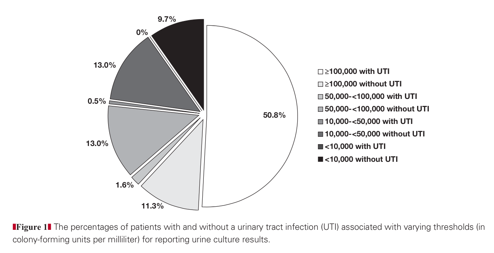

I came across this visualization1 of a very simple data set, and it took me a few minutes to fully understand what makes it so… suboptimal.

- Ok, first of all, it's a pie chart.
- The labels are separated from the corresponding values.
- The grey scale color map doesn't distinguish well between categories.
- But here's the real problem: the covariates are combined into a flat list of categories!
Even a simple table tells the story much more clearly:
| colony count | UTI | no UTI |
|---|---|---|
| [0, 10K) | 0.0 | 9.7 |
| [10K, 50K) | 0.5 | 13.0 |
| [50K, 100K) | 1.6 | 13.0 |
| [100K, Inf) | 50.8 | 11.3 |
Now you can immediately see that most patients with UTI have a urine culture with a high colony count, but there is a more or less uniform distribution of colony counts among patients without UTI.
Let's play around with some visualizations that may do a better job illustrating the relationship between colony counts and UTI.
So this isn't too bad - we can easily compare the relative proportion of cases with UTI in each of the bins. But this plot isn't so helpful for conditioning one covariate on another, which, to me, is fundamental to the purpose of the visualization.
With this in mind, I think that a stacked bar chart is a better choice.
This one shows the distribution of culture results among patients with or without UTI.
Or we can turn things around and look at the proportion of patients with and without UTI within each range of colony counts.
I like this last one the best - it best addresses to what extent urine culture is useful diagnostically, by showing that if the colony count is > 100K, there is about a 4:1 chance that the patient has a UTI, but for lower values the likelihood is much lower. This is the point that the authors of the study were trying to make - but with very little help from the visualization above.